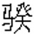

自从去年春间，北京女子师范大学有了反对校长杨荫榆事件以来，于是而有该校长在太平湖饭店[349]请客之后，任意将学生自治会员六人除名的事；有引警察及打手蜂拥入校的事；迨教育总长章士钊复出[350]，遂有非法解散学校的事；有司长刘百昭雇用流氓女丐殴曳学生出校，禁之补习所空屋中的事；有手忙脚乱，急挂女子大学招牌以掩天下耳目的事；有胡敦复[351]之趁火打劫，攫取女大校长饭碗，助章士钊欺罔世人的事。女师大的许多教职员，——我敢特地声明：并不是全体！——本极以章杨的措置为非，复痛学生之无辜受戮，无端失学，而校务维持会[352]之组织，遂愈加严固。我先是该校的一个讲师，于黑暗残虐情形，多曾目睹；后是该会的一个委员，待到女师大在宗帽胡同自赁校舍，而章士钊尚且百端迫压的苦痛，也大抵亲历的。当章氏势焰熏天时，我也曾环顾这首善之区，寻求所谓“公理”“道义”之类而不得；而现在突起之所谓“教育界名流”者，那时则鸦雀无声；甚且捧献肉麻透顶的呈文[353]，以歌颂功德。但这一点，我自然也判不定是因为畏章氏有嗾使兵警痛打之威呢，还是贪图分润金款之利[354]，抑或真以他为“公理”或“道义”等类的具象的化身？但是，从章氏逃走，女师大复校以后，所谓“公理”等件，我却忽而间接地从女子大学在撷英馆宴请“北京教育界名流及女大学生家长”的席上找到了。
据十二月十六日的《北京晚报》说，则有些“名流”即于十四日晚六时在那个撷英番菜馆开会。请吃饭的，去吃饭的，在中国一天不知道有多多少少，本不与我相干，虽然也令我记起杨荫榆也爱在太平湖饭店请人吃饭的旧事。但使我留心的是，从这饭局里产生了“教育界公理维持会”[355]，从这会又变出“国立女子大学后援会”，从这会又发出“致国立各校教职员联席会议函”，声势浩大，据说是“而于该校附和暴徒，自堕人格之教职员，即不能投畀豺虎，亦宜屏诸席外，勿与为伍”云。他们之所谓“暴徒”，盖即刘百昭之所谓“土匪”[356]，官僚名流，口吻如一，从局外人看来，不过煞是可笑而已。而我是女师大维持会员之一，又是女师大教员，人格所关，当然有抗议的权利。岂但抗议？“投虎”“割席”，“名流”的熏灼之状，竟至于斯，则虽报以恶声，亦不为过。但也无须如此，只要看一看这些“名流”究竟是什么东西，就尽够了。报上和函上有名单：
除了万里鸣是太平湖饭店掌柜，以及董子鹤辈为我所不知道的不计外，陶昌善[357]是农大教务长，教长兼农大校长章士钊的替身；石志泉是法大教务长；查良钊是师大教务长；李顺卿，王桐龄是师大教授；萧友梅是前女师大而今女大教员；蹇华芬是前女师大而今女大学生；马寅初是北大讲师，又是中国银行的什么，也许是“总司库”，这些名目我记不清楚了；燕树棠，白鹏飞，陈源即做《闲话》的西滢，丁燮林即做过《一只马蜂》的西林，周鲠生即周览，皮宗石，高一涵，李仲揆即李四光曾有一篇杨荫榆要用汽车迎他“观剧”的作品登在《现代评论》上的，都是北大教授，又大抵原住在东吉祥胡同，又大抵是先前反对北大对章士钊独立的人物，所以当章士钊炙手可热之际，《大同晚报》曾称他们为“东吉祥派的正人君子”[358]，虽然他们那时并没有开什么“公理”会。但他们的住址，今年新印的《北大职员录》上可很有些函胡了，我所依据的是民国十一年的本子。
日本人学了中国人口气的《顺天时报》，即大表同情于女子大学，据说多人的意见，以为女师大教员多系北大兼任，有附属于北大之嫌。亏它征得这么多人的意见。然而从上列的名单看来，那观察是错的。女师大向来少有专任教员，正是杨荫榆的狡计，这样，则校长即可以独揽大权；当我们说话时，高仁山即以讲师不宜与闻校事来箝制我辈之口。况且女师大也决不因为中有北大教员，即精神上附属于北大，便是北大教授，正不乏有当学生反对杨荫榆的时候，即协力来歼灭她们的人。即如八月七日的《大同晚报》，就有“某当局……谓北大教授中，如东吉祥派之正人君子，亦主张解散”等语。《顺天时报》的记者倘竟不知，可谓昏瞀，倘使知道而故意淆乱黑白，那就有挑拨对于北大怀着恶感的人物，将那恶感蔓延于女师大之嫌，居心可谓卑劣。但我们国内战争，尚且常有日本浪人[359]从中作祟，使良民愈陷于水深火热之中，更何况一校女生和几个教员之被诬蔑。我们也只得自责国人之不争气，竟任这样的报纸跳梁！
北大教授王世杰[360]在撷英馆席上演说，即云“本人决不主张北大少数人与女师大合作”，就可以证明我前言的不诬。至又谓“照北大校章教职员不得兼他机关主要任务然而现今北大教授在女师大兼充主任者已有五人实属违法应加以否认云云”，则颇有语病。北大教授兼国立京师图书馆副馆长月薪至少五六百元的李四光，不也是正在坐中“维持公理”，而且演说的么？使之何以为情？李教授兼副馆长的演说辞，报上却不载；但我想，大概是不赞成这个办法的。
北大教授燕树棠谓女大学生极可佩服，而对于“形同土匪破坏女大的人应以道德上之否认加之”，则竟连所谓女大教务长萧纯锦的自辩女大当日所埋伏者是听差而非流氓的启事[361]也没有见，却已一口咬定，嘴上忽然跑出一个“道德”来了。那么，对于形同鬼蜮破坏女师大的人，应以什么上之否认加之呢？
“公理”实在是不容易谈，不但在一个维持会上，就要自相矛盾，有时竟至于会用了“道义”上之手，自批“公理”上之脸的嘴巴。西滢是曾在《现代评论》（三十八）的《闲话》里冷嘲过援助女师大的人们的：“外国人说，中国人是重男轻女的。我看不见得吧。”现在却签名于什么公理会上了，似乎性情或体质有点改变。而且曾经感慨过：“你代被群众专制所压迫者说了几句公平话，那么你不是与那人有‘密切的关系’便是吃了他或她的酒饭。”（《现代》四十）然而现在的公理什么会上的言论和发表的文章上，却口口声声，侧重多数了[362]；似乎主张又颇有些参差，只有“吃饭”的一件事还始终如一。在《现代评论》（五十三）上，自诩是“所有的批评都本于学理和事实，绝不肆口嫚骂”[363]，而忘却了自己曾称女师大为“臭毛厕”，并且署名于要将人“投畀豺虎”的信尾曰：陈源。陈源不就是西滢么？半年的事，几个的人，就这么矛盾支离，实在可以使人悯笑。但他们究竟是聪明的，大约不独觉得“公理”歪邪，而且连自己们的“公理维持会”也很有些歪邪了罢，所以突然一变而为“女子大学后援会”了，这是的确的，后援，就是站在背后的援助。
但是十八日《晨报》上所载该后援会开会的记事，却连发言的人的名姓也没有了，一律叫作“某君”。莫非后来连对于自己的姓名也觉得可羞，真是“内愧于心”了？还是将人“投畀豺虎”之后，豫备归过于“某君”，免得自己负责任，受报复呢？虽然报复的事，并为“正人君子”们所反对，但究竟还不如先使人不知道“后援”者为谁的稳当，所以即使为着“道义”，而坦白的态度，也仍为他们所不取罢。因为明白地站出来，就有些“形同土匪”或“暴徒”，怕要失了专在背后，用暗箭的聪明人的人格。
其实，撷英馆里和后援会中所啸聚的一彪人马，也不过是各处流来的杂人，正如我一样，到北京来骗一口饭[364]，岂但“投畀豺虎”，简直是已经“投畀有北”[365]的了。这算得什么呢？以人论，我与王桐龄，李顺卿虽曾在西安点首谈话，却并不当作朋侪；与陈源虽尝在给泰戈尔[366]祝寿的戏台前一握手，而早已视为异类，又何至于会有和他们连席之意？而况于不知什么东西的杂人等辈也哉！以事论，则现在的教育界中实无豺虎，但有些城狐社鼠[367]之流，那是当然不能免的。不幸十余年来，早见得不少了；我之所以对于有些人的口头的鸟“公理”而不敬者，即大抵由于此。
十二月十八日。
注 释
[348] 本篇最初发表于1925年12月24日《国民新报副刊》。
[349] 太平湖饭店 应为西安饭店。参看本书《后记》。
[350] 章士钊复出 1925年5月7日，章士钊因禁止学生纪念“五七”国耻的爱国运动，引起学生反对，逃往天津暂避；6月间，他又重返教育部，于8月19日派武装警察强行解散女师大。
[351] 胡敦复（1886—1978） 江苏无锡人，早年留学美国，1912年创办上海大同大学并任校长。他曾将大同大学在五卅惨案后禁止学生参加爱国运动的通告，寄给章士钊主办的《甲寅》周刊发表。通告中有“许（学生）以奋学救国，决不许以废学出位救国”的话，章士钊对此嘉许说：“此语不图于今日闻之”，并称赞他办的大同大学“成绩为公私诸校冠”（1925年8月15日《甲寅》第一卷第五号）。章士钊在解散女师大以后，便叫胡敦复担任女子大学校长。胡在1925年9月就任，同年12月去职。
[352] 校务维持会 1925年8月10日章士钊下令解散女师大，同日，该校教员及学生即行组织校务维持会，负责校内外一切事务。鲁迅于13日被推举为委员。该会在女师大复校后，于1926年1月13日交卸职务。
[353] 肉麻透顶的呈文 指女师大风潮中及北大宣布脱离教育部后，北京朝阳、民国、中国、华北、平民五所私立大学联名给段祺瑞政府的呈文。该呈文吹捧段祺瑞政府，诋毁学生运动，要求整顿教育，以消隐患。《甲寅》周刊第一卷第九号（1925年9月12日）“时评”中称赞“其功固不在禹下，甚冀长此保持光明严正之态度”。
[354] 分润金款之利 当时朝阳、民国等五所私立大学曾派代表“谒见”段祺瑞，要求分享金款；段内阁会议决定另拨三十余万元给这五所大学。金款，参看本卷第169页注〔5〕。
[355] “教育界公理维持会” 1925年12月14日由陈西滢、王世杰、燕树棠等人组成，旨在声援章士钊创办的女子大学，反对女师大复校，压迫该校学生和教育界进步人士。该会成立的次日改名为“国立女子大学后援会”，16日发出《致北京国立各校教职员联席会议函》，其中说：“此次国立女子大学，于十二月一日，有人乘京中秩序紊乱之际，率领暴徒拦入校内，强力霸占，将教职员驱逐，且将该校教务长围困威胁，诋辱百端……同人等以为女师大应否恢复，目的如何，另属一问题，而少数人此种横暴行为，理应在道德上加以切实否认，而主张此等暴行之人，尤应力予贬斥，以清士流。”又说：“对于此次女师大非法之恢复，决不能迁就事实，予以正式之承认，而于该校附和暴徒，自堕人格之教职员，即不能投畀豺虎，亦宜屏诸席外，勿与为伍。”
[356] “土匪” 1925年10月间刘百昭在女子大学演说时，曾辱骂反对章士钊的人为“土匪”。
[357] 陶昌善（1879—？） 浙江嘉兴人，曾留学日本，时任北京大学农学院教务长。下文的石志泉（1885—1960），湖北孝感人，曾留学日本，时任北京法政大学教务长。查良钊（1897—1982），浙江海宁人，曾留学美国，时任北京师范大学教务长。李顺卿（1894—1969），名干臣，字顺卿，山东海阳人，曾留学美国，时任北京师范大学教授、生物系主任。王桐龄（1877—1953），河北任丘人，曾留学日本，时任北京师范大学历史系教授。萧友梅（1884—1940），广东中山人，曾留学日本、德国，时任北京女子大学教授。马寅初（1882—1982），浙江嵊县人，曾留学美国，时任北京大学教授、中国银行发行部主任。燕树棠（1892—？），河北定县人，曾留学美国，时任北京大学教授。白鹏飞（1870—1943），广西桂林人，曾留学日本，时任北京大学法律系教授。丁西林，参看本卷第208页注〔32〕。周鲠生（1889—1971），原名周览，湖南长沙人，曾留学英、法，时任北京大学教授、政治系主任。皮宗石（1887—1954），湖南长沙人，曾留学日、英，时任北京大学政治系教授。高一涵，参看本卷第402页注〔7〕。
[358] “东吉祥派的正人君子” 章士钊解散女师大的行动，引起北京教育界和广大学生的反对。北京大学评议会于1925年8月18日召集会议，通过与教育部脱离关系的议案，宣布独立。但胡适、陈西滢、王世杰、燕树棠等十七人却以北大“应该早日脱离一般的政潮与学潮，努力向学问的路上走”为借口，表示坚决反对。他们向评议会提抗议书，又要求学校当局召集教务会议与评议会举行联席会议，复议此案。在几次会议上，他们或以“退席”相要挟（如胡适等），或声明无表决权（如王世杰等）；虽终未能推翻原案，却声援了政府当局。所以章士钊在《甲寅》周刊第一卷第七号（1925年8月29日）的《说 》一文中称赞他们的举动是“表扬学术独立之威重，诚甚盛举”；1925年8月7日《大同晚报》的报导中称他们为“东吉祥派之正人君子”。
》一文中称赞他们的举动是“表扬学术独立之威重，诚甚盛举”；1925年8月7日《大同晚报》的报导中称他们为“东吉祥派之正人君子”。
[359] 日本浪人 日本幕府时代失去禄位、四处流浪的武士。江户时代（1603—1867），随着幕府体制的瓦解，浪人不断增加。他们无固定职业，常受雇于人，从事各种好勇斗狠的活动，后来日本帝国主义常用这些人从事各种侵略活动。
[360] 王世杰（1891—1981） 湖北崇阳人，曾留学英、法，时任北京大学教授，现代评论派成员。后任国民党政府教育部长、外交部长等职。
[361] 萧纯锦的启事，刊登于1925年12月3日《京报》。女师大于11月30日迁回石驸马大街原址后，次日开会向各界代表报告经过情形，萧纯锦曾到场，并派人扰乱会议，但他在启事中却说：“鄙人以善意列席旁听，横被威胁，迫令手书辞去教务长职权，本校学生职员见势危急，在场外大呼不得用武，即诬指为流氓，旋将全校办公处所一一封闭，驱逐职员，校务即时停顿。”萧纯锦（1893—1968），江西永新人，早年留学美国，时任北京女子师范大学教务长。
[362] 陈西滢关于“多数”的议论，参看下篇《这回是“多数”的把戏》及其注〔8〕。
[363] “批评都本于学理和事实” 这是陈西滢为纪念《现代评论》创刊一周年所作的《闲话》中的话，见该刊第三卷第五十三期（1925年12月12日）。
[364] 骗一口饭 这里指教书而言。林

在1925年2月1日《晨报副刊》发表的《致北京农大校长公开信》中说：“今日身当教员之人，果有几人真肯为教育牺牲？大多数不外以教习为糊口之职业，而存心借此骗一口饭而已。”[365] “投畀豺虎”、“投畀有北” 语出《诗经·小雅·巷伯》：“取彼谮人，投畀豺虎；豺虎不食，投畀有北。”据唐代孔颖达疏：“有北，太阴之乡，使冻杀之。”谮人，造谣的人。
[366] 泰戈尔（R.Tagore，1861—1941） 印度诗人。1924年4月曾来华访问，并在中国度过他的六十四岁生日。
[367] 城狐社鼠 比喻依势作恶的小人。据《晋书·谢鲲传》，王敦欲除刘隗，谢鲲说：“隗诚始祸，然城狐社鼠也。”意思是刘隗在皇帝身边，就像狐狸、老鼠藏身城墙和土地庙（社），要铲除它们，又怕损坏城、社。